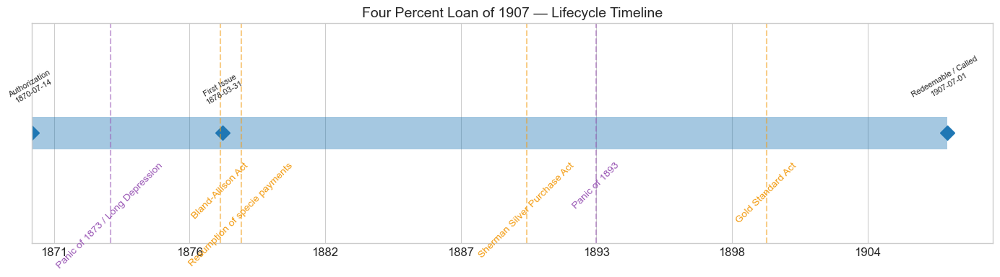
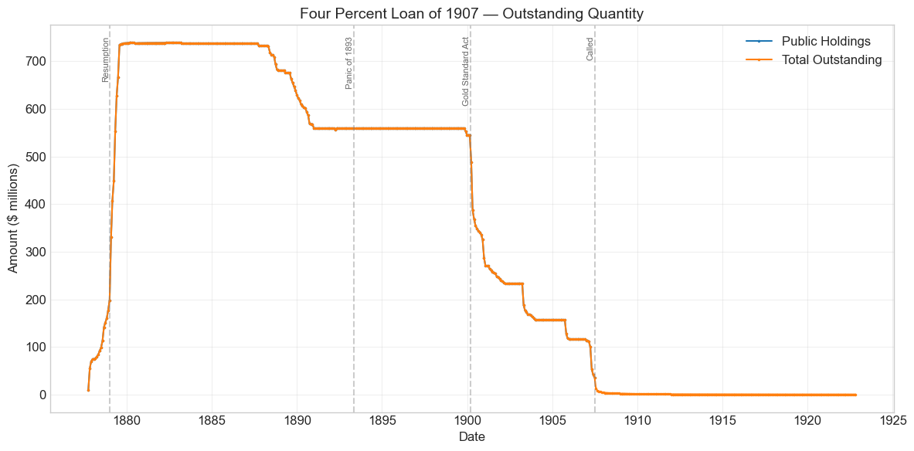
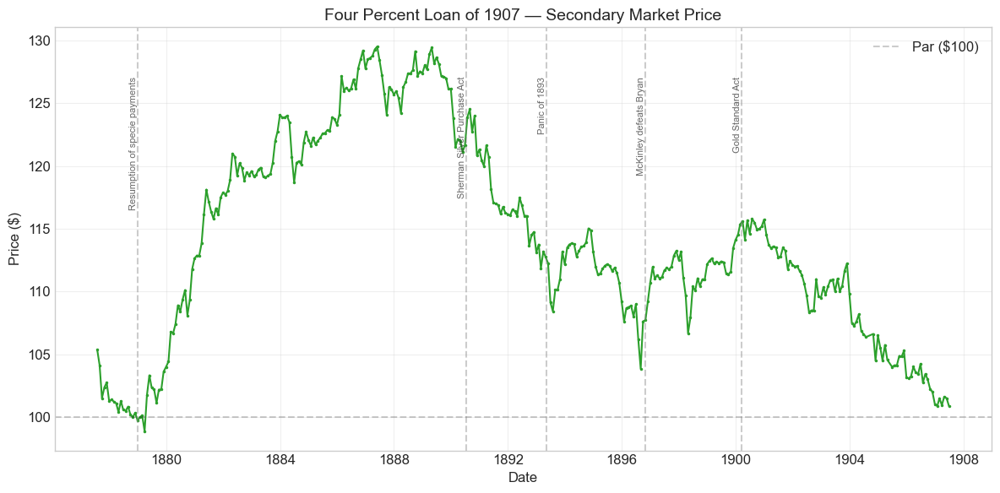
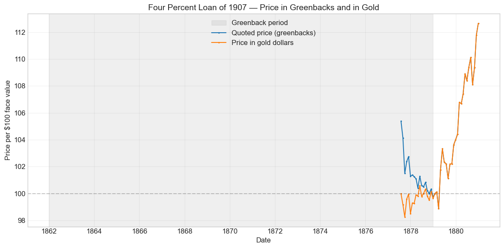
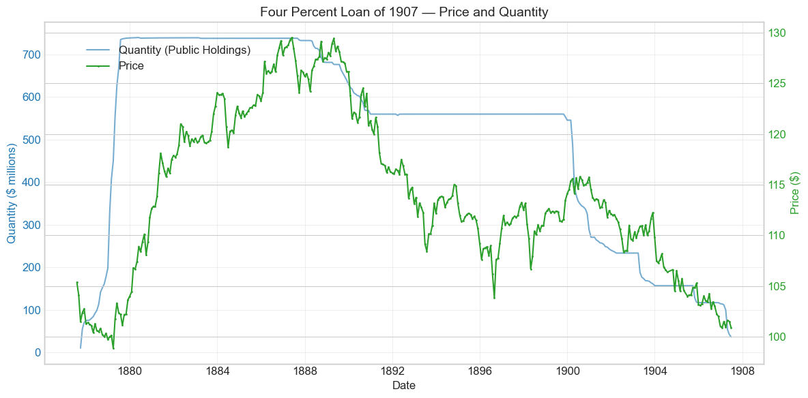
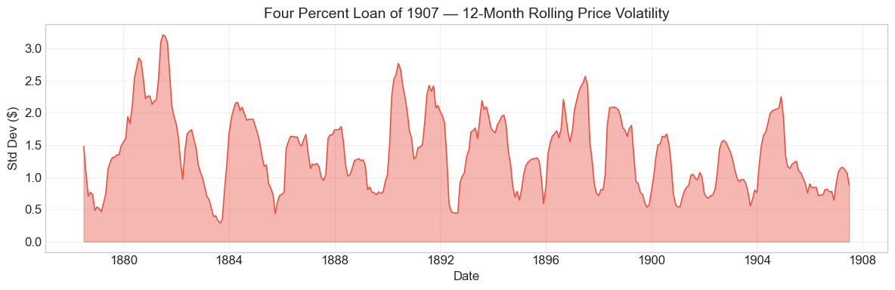

Bond Biography: Four Percent Loan of 1907#
The Capstone of the Great Refunding#
An enhanced chapter from the Hall-Payne-Sargent US Federal Bond Database (2,857 issues, 1776–1960)
Bond ID (L1): 20121 | Category: Interest Bearing > Marketable > Long Term Bond
import pandas as pd
import numpy as np
import matplotlib.pyplot as plt
import matplotlib.patches as mpatches
import datetime
import warnings
warnings.filterwarnings('ignore')
plt.style.use('seaborn-v0_8-whitegrid')
plt.rcParams.update({'figure.figsize': (12, 6), 'font.size': 12,
'axes.titlesize': 14, 'axes.labelsize': 12})
# Load the bond database
store = pd.HDFStore('../data/BondDF.h5', mode='r')
BondList = store['BondList']
BondQuant = store['BondQuant']
BondPrice = store['BondPrice']
store.close()
BondQuant_T = BondQuant.transpose()
BondPrice_T = BondPrice.transpose()
bond_id = 20121
print(f'Loaded data for: Four Percent Loan of 1907 (ID: 20121)')
/Users/thomassargent/anaconda3/lib/python3.9/site-packages/pandas/core/arrays/masked.py:60: UserWarning: Pandas requires version '1.3.6' or newer of 'bottleneck' (version '1.3.5' currently installed).
from pandas.core import (
Loaded data for: Four Percent Loan of 1907 (ID: 20121)
Finishing the Civil War’s Business#
In 1865 the United States emerged from the Civil War owing more money than any government in its history — a gross debt of roughly $2.8 billion, much of it in the form of the 6 percent “five-twenties” that Jay Cooke had sold door-to-door to finance the Union armies. Those bonds carried a wartime price: 6 percent interest, payable in gold, on securities that had often been purchased with depreciated greenbacks. Once the guns fell silent, the great project of American public finance for the next generation was to refund that expensive wartime debt into cheaper peacetime debt — and to do it while restoring the paper dollar to par with gold.
The instrument that completed this project was the Four Percent Loan of 1907 — known to contemporaries as the “4s of 1907” or the “funded loan of 1907.” It was authorized by the Refunding Act of July 14, 1870, as amended January 20, 1871, which empowered the Treasury to issue three descending tiers of bonds — 5 percents redeemable after ten years, 4½ percents after fifteen years, and 4 percents after thirty years — and to exchange them, at par, for the outstanding 6 percent war debt. The Act was explicit that the new bonds were payable, principal and interest, “in coin of the present standard value,” a phrase whose ambiguity would haunt the bond for two decades.
The refunding proceeded in sequence: the 5s of 1881 (sold 1871–1875), the 4½s of 1891 (sold from 1876), and finally the 4s of 1907, first issued in 1878. The 4 percents were the largest and the last leg — the point at which the United States, barely a dozen years removed from a war that had nearly bankrupted it, asked the world’s investors to accept 4 percent on a thirty-year bond. The man who executed the operation was John Sherman, Senator from Ohio turned Secretary of the Treasury under President Hayes (1877–1881), who managed the refunding in tandem with an even more delicate task: the resumption of specie payments on January 1, 1879, mandated by the Resumption Act of 1875. Refunding and resumption were two faces of the same gamble — that American credit had recovered enough to borrow long, cheap, and in coin.
By mid-1879 the gamble had succeeded spectacularly. Roughly $740 million of the 4s of 1907 was outstanding — the largest single loan the United States had ever floated — and the annual interest saved by the whole refunding operation ran into the tens of millions of dollars. The bond then lived a long and eventful second life: battered by the silver agitation of the 1870s–1890s, tested by the Panic of 1893 and the near-exhaustion of the Treasury’s gold reserve, redeemed in doubt by the Gold Standard Act of 1900, and prized throughout by national banks, for whom it served as collateral for their circulating notes. Its price history, traced below across 357 monthly observations from 1877 to 1907, is a barometer of the entire gilded-age struggle over what the American dollar would be.
Historical Context: Resumption, Silver, and Gold#
The following major events framed this bond’s lifetime:
Date |
Event |
Category |
|---|---|---|
1873–1879 |
Panic of 1873 / Long Depression |
Crisis |
1878-02-28 |
Bland–Allison Act (silver purchases resume) |
Monetary |
1879-01-01 |
Resumption of specie payments |
Monetary |
1890-07-14 |
Sherman Silver Purchase Act |
Monetary |
1893–1897 |
Panic of 1893 and depression |
Crisis |
1893-11-01 |
Repeal of the Sherman Silver Purchase Act |
Monetary |
1894–1896 |
Cleveland-era bond sales to defend the gold reserve |
Fiscal |
1900-03-14 |
Gold Standard Act |
Monetary |
1907-07-01 |
Bond becomes redeemable; Treasury calls the loan |
Fiscal |
The Long Depression and the birth of the loan#
Paradoxically, the depression that followed the Panic of 1873 helped rather than hurt the refunding. Six years of falling prices, business failures, and idle capital left investors on both sides of the Atlantic hungry for safe securities, and the yields they would accept on government debt fell steadily. When the 4 percents were brought to market in 1877–78, the deflationary environment meant that a 4 percent coin bond of the United States — a government running budget surpluses and paying down debt every year — looked genuinely attractive. The database’s first price observations, from mid-1877, already show the forthcoming 4s quoted at a small premium above par.
The silver question#
The bond’s chief enemy was never the business cycle but the money question. The Coinage Act of 1873 had dropped the standard silver dollar from the coinage — the “Crime of ‘73” to its enemies — and as the gold price of silver collapsed after 1873, a powerful political movement demanded free coinage of silver at the old 16-to-1 ratio. For bondholders the threat was concrete: the 4s were payable “in coin,” and if silver were restored to full legal-tender coinage, “coin” might mean depreciated silver dollars rather than gold. In early 1878 Congress passed the Matthews resolution, declaring that the bonds could lawfully be paid in silver dollars, and then the Bland–Allison Act (February 1878, over President Hayes’s veto), requiring monthly Treasury silver purchases. Sherman feared, with reason, that such declarations would wreck the refunding among European investors. In the event, successive Treasury secretaries maintained gold payments in practice, and the market learned to price the silver threat as a fluctuating risk premium rather than a certainty — visible in the price history as a persistent tendency of the 4s to trade below where a riskless gold bond of the same coupon would have stood.
The Panic of 1893 and the gold-reserve crisis#
The Sherman Silver Purchase Act of 1890 doubled the Treasury’s silver purchases and paid for them with notes redeemable in “coin.” The resulting drain on the Treasury’s gold — as note-holders presented paper for gold and exported it — helped precipitate the Panic of 1893. The gold reserve fell below the $100 million level regarded as the minimum safeguard of resumption, and for three years the question of whether the United States would remain on gold was genuinely open. President Cleveland forced repeal of the Silver Purchase Act in late 1893 and then, in 1894–96, sold roughly $260 million of new bonds — including the famous February 1895 contract with a syndicate headed by J. P. Morgan and August Belmont — expressly to replenish the gold reserve. The 4s of 1907 were not among the bonds sold in these operations, but their price felt every tremor: the mid-1890s show the deepest sustained sag in the bond’s premium between resumption and the late-life pull toward par, with the sharpest weakness coinciding with the reserve crises of 1893–96 and the free-silver campaign of William Jennings Bryan in 1896.
Resolution: the Gold Standard Act#
McKinley’s victory in 1896, the world gold-mining boom, and returning prosperity settled the question. The Gold Standard Act of March 14, 1900 defined the dollar as gold, committed the Treasury to maintaining all forms of money at parity with it, and — directly relevant to this bond — authorized the refunding of the 4s of 1907 (along with the 3s of 1908–18 and 5s of 1904) into new 2 percent Consols of 1930, payable explicitly in gold. The silver-risk discount vanished; what remained of the bond’s price behavior thereafter was arithmetic — the steady amortization of its premium as the July 1, 1907 redemption date approached — plus the peculiar premium attached to its national-bank circulation privilege, discussed below.
# Bond Lifecycle Timeline
fig, ax = plt.subplots(figsize=(14, 4))
# Key dates
dates = [('Authorization', '1870-07-14'), ('First Issue', '1878-03-31'), ('Redeemable / Called', '1907-07-01')]
events = [('Panic of 1873 / Long Depression', '1873-09-18', 'crisis'),
('Bland-Allison Act', '1878-02-28', 'monetary'),
('Resumption of specie payments', '1879-01-01', 'monetary'),
('Sherman Silver Purchase Act', '1890-07-14', 'monetary'),
('Panic of 1893', '1893-05-05', 'crisis'),
('Gold Standard Act', '1900-03-14', 'monetary')]
import matplotlib.dates as mdates
from datetime import datetime
# Plot bond lifetime bar
d0 = datetime.strptime(dates[0][1], '%Y-%m-%d')
d1 = datetime.strptime(dates[-1][1], '%Y-%m-%d')
ax.barh(0, (d1 - d0).days, left=mdates.date2num(d0), height=0.3,
color='#1f77b4', alpha=0.4, label='Bond Lifetime')
# Mark key dates
for label, date_str in dates:
d = datetime.strptime(date_str, '%Y-%m-%d')
ax.plot(mdates.date2num(d), 0, 'D', color='#1f77b4', markersize=10)
ax.annotate(f'{label}\n{date_str}', (mdates.date2num(d), 0.25),
ha='center', va='bottom', fontsize=8, rotation=30)
# Mark historical events
colors = {'war': '#e74c3c', 'crisis': '#9b59b6', 'legislation': '#2ecc71', 'other': '#95a5a6', 'monetary': '#f39c12'}
for name, date_str, cat in events:
d = datetime.strptime(date_str, '%Y-%m-%d')
ax.axvline(mdates.date2num(d), color=colors.get(cat, 'gray'), alpha=0.5, linestyle='--')
ax.annotate(name, (mdates.date2num(d), -0.25), ha='center', va='top',
fontsize=10, rotation=45, color=colors.get(cat, 'gray'))
ax.set_yticks([])
ax.xaxis.set_major_formatter(mdates.DateFormatter('%Y'))
ax.set_title('Four Percent Loan of 1907 — Lifecycle Timeline')
ax.set_ylim(-1, 1)
plt.tight_layout()
plt.show()

Bond Features#
Feature |
Detail |
|---|---|
Name |
Four Percent Loan of 1907 (“Funded Loan of 1907”) |
Authorizing Act |
July 14, 1870, as amended January 20, 1871 |
First Issue Date |
March 31, 1878 (subscriptions opened mid-1877) |
Term |
30 years |
Redeemable |
After July 1, 1907, at the pleasure of the United States |
Coupon Rate |
4.0% |
Payment Frequency |
Quarterly (January, April, July, October) |
Payable in Coin |
Yes — “coin of the present standard value” (Act of 1870) |
Peak Outstanding |
~$740 million (1880) — the largest U.S. loan to that date |
Price Sold |
Par (100), in coin |
Special Privilege |
Eligible as security for national bank note circulation |
The bonds were issued both as coupon bonds and as registered stock, in denominations ranging from small certificates suitable for individual savers up to large registered holdings; the Act of February 26, 1879 also authorized $10 refunding certificates bearing 4 percent, convertible into the 4s of 1907 — a deliberate device for drawing the small savings of the public into the funded debt.
# Display full bond features from database
row = BondList.loc[20121]
display_cols = [
"Treasury's Name Of Issue", 'Authorizing Act', 'Term Of Loan',
'First Issue Date', 'First Redemption Date', 'Final Redemption Date',
'Coupon Rate', 'Coupons Per Year', 'Callable', 'Coin',
'Authorized Amount', 'Price Sold'
]
print('Bond Features from Database:')
print('=' * 55)
for col in display_cols:
if col in row.index:
print(f' {col:<30} {row[col]}')
Bond Features from Database:
=======================================================
Treasury's Name Of Issue Four Percent Loan of 1907
Authorizing Act July 14, 1870
Term Of Loan 30 years
First Issue Date 1878-03-31 00:00:00
First Redemption Date NaT
Final Redemption Date NaT
Coupon Rate 4.0
Coupons Per Year 4.0
Callable 0.0
Coin 1.0
Authorized Amount nan
Price Sold 1.0
Bond Quantity Over Time#
The bond’s outstanding quantity peaked at roughly $739 million in 1880 and then traced three long movements: two decades of near-plateau punctuated by modest sinking-fund purchases, a sharp step down after 1900 as holders converted into the 2 percent Consols of 1930, and a final collapse to zero at the 1907 call. Data span 1877 to mid-1907 (357 monthly observations).
# Bond quantity over time
fig, ax = plt.subplots(figsize=(12, 6))
for stype in ['Public Holdings', 'Total Outstanding']:
try:
s = BondQuant_T.loc[(20121, stype)]
s = s[s.notna()]
if len(s) > 0:
ax.plot(s.index, s.values / 1e6, marker='.', markersize=3, linewidth=1.5, label=stype)
except KeyError:
pass
ax.set_title('Four Percent Loan of 1907 — Outstanding Quantity')
ax.set_xlabel('Date')
ax.set_ylabel('Amount ($ millions)')
ax.legend()
ax.grid(True, alpha=0.3)
events = {'1879-01-01': 'Resumption', '1893-05-05': 'Panic of 1893',
'1900-03-14': 'Gold Standard Act', '1907-07-01': 'Called'}
for date_str, label in events.items():
d = pd.Timestamp(date_str)
ax.axvline(d, color='gray', alpha=0.4, linestyle='--')
ax.text(d, ax.get_ylim()[1]*0.97, label, rotation=90, va='top', ha='right', fontsize=8, alpha=0.7)
plt.tight_layout()
plt.show()

Quantity Analysis: How $740 Million Was Raised, Held, and Retired#
The ramp-up, 1877–1879. The steep climb visible at the left of the chart is the refunding operation itself. Subscriptions to the 4 percents opened in mid-1877 through a banking syndicate; sales stalled during the winter of 1877–78 when the silver agitation in Congress frightened European buyers, then resumed under Sherman’s management. The decisive surge came after resumption: in the early months of 1879 the 4s were thrown open to popular subscription, and the public — reassured by a Treasury that was now redeeming greenbacks in gold on demand — absorbed hundreds of millions with a speed that astonished contemporaries. The proceeds were applied to calling in the Civil War 5-20s and 10-40s, so that each dollar of 4s issued extinguished a dollar of 5 and 6 percent debt. By 1880 the loan stood near $740 million, and the great refunding was complete.
The long plateau, 1880–1900. Unlike its siblings the 5s of 1881 and 4½s of 1891, the 4s of 1907 could not be touched before their 1907 call date, so the persistent federal surpluses of the 1880s could reduce the loan only through open-market purchases at a premium — which the Treasury did in moderation, particularly in the surplus-absorbing purchases of 1887–1890. The gentle downward drift of the plateau reflects those purchases; the loan’s bedrock stability reflects its other constituency, the national banks, which held large blocks on deposit with the Treasurer as backing for their note circulation and had no incentive to sell.
Conversion and call, 1900–1907. The Gold Standard Act of 1900 invited holders to exchange the 4s (and certain other issues) for new 2 percent Consols of 1930 at a valuation reflecting the old bonds’ premium. Because the 2s carried the circulation privilege and a thirty-year life, national banks converted heavily, producing the visible step down in 1900. Finally, the Treasury exercised its option at the first opportunity: the loan became redeemable on July 1, 1907, and the sharp collapse in the last observations of the series records the call and payment of the remaining bonds, with a portion refunded into other securities. The bond thus ended precisely as the Act of 1870 had contemplated thirty-seven years earlier — redeemed at par, in gold, at the government’s pleasure.
Secondary Market Prices#
Overall Statistics (1877-07 to 1907-06): Mean $114.11, Range $98.88–$129.52, Std Dev $7.97, 357 observations.
By Period:
Period |
Mean |
Std |
Min |
Max |
Obs |
|---|---|---|---|---|---|
Pre-issue trading (1877-07 to 1878-03) |
$102.35 |
$1.50 |
$101.10 |
$105.38 |
9 |
Issue to redemption (1878-03 to 1907-06) |
$114.38 |
$7.86 |
$98.88 |
$129.52 |
349 |
Three features of the price history deserve emphasis before looking at the charts. First, the bond spent almost its entire life at a premium — often a very large one, peaking near $130 in the late 1880s. Second, that premium was not purely an investment phenomenon: much of it was the capitalized value of the bond’s circulation privilege to national banks, so that the quoted price frequently implied a net yield to a pure investor far below anything else in the market. Third, the long decline after the late-1880s peak is mostly mechanical — the amortization of the premium as the fixed 1907 redemption date drew nearer — with the silver crises of the 1890s superimposed as temporary sags on that glide path.
# Annotated price chart
fig, ax = plt.subplots(figsize=(12, 6))
s = BondPrice_T.loc[(20121, 'Average')]
s = pd.to_numeric(s, errors='coerce').dropna()
if len(s) > 0:
ax.plot(s.index, s.values, marker='.', markersize=3, linewidth=1.5, color='#2ca02c')
ax.axhline(100, color='black', alpha=0.2, linestyle='--', label='Par ($100)')
ax.set_title('Four Percent Loan of 1907 — Secondary Market Price')
ax.set_xlabel('Date')
ax.set_ylabel('Price ($)')
ax.legend()
ax.grid(True, alpha=0.3)
events = {'1879-01-01': 'Resumption of specie payments',
'1890-07-14': 'Sherman Silver Purchase Act',
'1893-05-05': 'Panic of 1893',
'1896-11-03': 'McKinley defeats Bryan',
'1900-03-14': 'Gold Standard Act'}
for date_str, label in events.items():
d = pd.Timestamp(date_str)
ax.axvline(d, color='gray', alpha=0.4, linestyle='--')
ax.text(d, ax.get_ylim()[1]*0.97, label, rotation=90, va='top', ha='right', fontsize=8, alpha=0.7)
plt.tight_layout()
plt.show()

Prices in greenbacks and in gold#
From January 1862 to December 1878 the database quotes this bond in greenbacks, while its coupons were paid in coin. A greenback price therefore moves with the gold premium as well as with the bond’s credit. The chart below divides each greenback price by the greenback price of $100 in gold, which restates the quotation in gold dollars. Before 1862 and after 1878 the two units coincide.
# Price in greenbacks and in gold units, 1860-1880
gold = pd.read_csv('../data/gold_price_greenbacks_1862_1878.csv', comment='#', parse_dates=['date']).set_index('date')['gold_price_greenbacks']
p = pd.to_numeric(BondPrice_T.loc[(20121, 'Average')], errors='coerce').dropna()
p = p.loc['1860-01-01':'1880-12-31']
g = gold.reindex(p.index)
g[(p.index < pd.Timestamp('1862-01-01')) | (p.index > pd.Timestamp('1878-12-31'))] = 100.0
p_gold = p / (g / 100.0)
fig, ax = plt.subplots(figsize=(12, 6))
ax.axvspan(pd.Timestamp('1862-01-01'), pd.Timestamp('1878-12-31'), color='gray', alpha=0.12, label='Greenback period')
ax.plot(p.index, p.values, marker='.', markersize=3, linewidth=1.5, label='Quoted price (greenbacks)')
ax.plot(p_gold.index, p_gold.values, marker='.', markersize=3, linewidth=1.5, label='Price in gold dollars')
ax.axhline(100, color='black', alpha=0.2, linestyle='--')
ax.set_title('Four Percent Loan of 1907 — Price in Greenbacks and in Gold')
ax.set_xlabel('Date')
ax.set_ylabel('Price per \\$100 face value')
ax.legend()
ax.grid(True, alpha=0.3)
plt.tight_layout()
plt.show()

# Price and Quantity — dual-axis chart
fig, ax1 = plt.subplots(figsize=(12, 6))
# Quantity (left axis)
for stype in ['Public Holdings', 'Total Outstanding']:
try:
q = BondQuant_T.loc[(20121, stype)]
q = q[q.notna()]
if len(q) > 0:
ax1.plot(q.index, q.values / 1e6, color='#1f77b4', alpha=0.6, label=f'Quantity ({stype})')
break
except KeyError:
pass
ax1.set_xlabel('Date')
ax1.set_ylabel('Quantity ($ millions)', color='#1f77b4')
ax1.tick_params(axis='y', labelcolor='#1f77b4')
# Price (right axis)
ax2 = ax1.twinx()
p = BondPrice_T.loc[(20121, 'Average')]
p = pd.to_numeric(p, errors='coerce').dropna()
if len(p) > 0:
ax2.plot(p.index, p.values, color='#2ca02c', marker='.', markersize=2, label='Price')
ax2.set_ylabel('Price ($)', color='#2ca02c')
ax2.tick_params(axis='y', labelcolor='#2ca02c')
ax1.set_title('Four Percent Loan of 1907 — Price and Quantity')
ax1.grid(True, alpha=0.3)
fig.legend(loc='upper left', bbox_to_anchor=(0.1, 0.9))
plt.tight_layout()
plt.show()

Detected Price/Quantity Events, Explained#
The following significant movements were auto-detected in the data. The right-hand column gives the historical cause:
Date |
Type |
Change |
Explanation |
|---|---|---|---|
1877-10 |
Quantity increase |
+450% |
The refunding gets under way: early syndicate deliveries of the 4 percents, on a small initial base. |
1877-11 |
Quantity increase |
+27.3% |
Continued syndicate subscriptions before the winter interruption caused by the silver agitation in Congress. |
1878-08 |
Quantity increase |
+25.7% |
Sales resume in strength as resumption approaches and Sherman’s gold reserve accumulates. |
1879-01 |
Quantity increase |
+66.4% |
Resumption of specie payments (January 1, 1879). With greenbacks now redeemable in gold, the 4s are opened to popular subscription and the public pours in. |
1879-02 |
Quantity increase |
+23.0% |
The popular loan continues; proceeds call in the old 6 percent 5-20s. |
1879-04 |
Quantity increase |
+23.1% |
Final surge completing the refunding; the loan approaches its ~$740 million peak. |
1900-04 |
Quantity decrease |
−20.7% |
The Gold Standard Act (March 14, 1900): holders — above all national banks — convert 4s of 1907 into the new 2 percent Consols of 1930. |
1907-04 |
Quantity decrease |
−46.4% |
Anticipatory redemption operations as the July 1, 1907 call date arrives. Note: this precedes the Panic of 1907 (October), which played no role in the retirement. |
1907-05 |
Quantity decrease |
−22.0% |
Continued redemption; the loan is extinguished around its call date, on schedule. |
The pattern is striking for what is absent: no panic-driven quantity movements at all. Every large change in the outstanding stock of the 4s of 1907 was a deliberate act of debt management — issuance in 1877–79, conversion in 1900, redemption in 1907. The panics of the era show up in the bond’s price, not its quantity.
Price Volatility#
Maximum drawdown: −22.1% (from the peak of $129.52 on May 31, 1887 to the trough near par on January 31, 1907)
Average monthly return: −0.008%
These summary numbers require careful interpretation, because for a callable premium bond a “drawdown” is not a disaster — it is destiny. A bond redeemable at $100 in 1907 that trades at $129 in 1887 must lose roughly a quarter of its price over the following twenty years even if nothing whatever goes wrong; the premium is simply the present value of twenty years of above-market coupons, and it melts as those coupons are paid. The gentle negative average monthly return is exactly this amortization.
The rolling-volatility chart below therefore isolates the genuinely eventful periods. Volatility is elevated in the early 1880s as the bond found its level after the refunding; it flares in the mid-1890s, when the gold-reserve crises and the free-silver campaign made the “coin” clause briefly terrifying; and it subsides into remarkable placidity after 1900, once the Gold Standard Act removed the monetary risk and nothing remained but the arithmetic of the approaching call.
# Rolling volatility (12-month window)
p = BondPrice_T.loc[(20121, 'Average')]
p = pd.to_numeric(p, errors='coerce').dropna()
if len(p) >= 12:
rolling_std = p.rolling(window=12).std().dropna()
fig, ax = plt.subplots(figsize=(12, 4))
ax.fill_between(rolling_std.index, rolling_std.values, alpha=0.4, color='#e74c3c')
ax.plot(rolling_std.index, rolling_std.values, color='#e74c3c', linewidth=1)
ax.set_title('Four Percent Loan of 1907 — 12-Month Rolling Price Volatility')
ax.set_xlabel('Date')
ax.set_ylabel('Std Dev ($)')
ax.grid(True, alpha=0.3)
plt.tight_layout()
plt.show()
else:
print('Insufficient data for rolling volatility (need >= 12 observations)')

Issuance, Distribution, and Redemption#
The syndicate. The 4 percents were brought out at par in coin through arrangements between the Treasury and a powerful Anglo-American banking syndicate — the same machinery that had marketed the 4½s of 1891. Its core members included August Belmont & Co. (the Rothschilds’ American agents), the London and Frankfurt houses of Rothschild, J. & W. Seligman & Co., Morton, Bliss & Co., and the First National Bank of New York. The syndicate took the bonds under contract, placed them with investors in New York, London, and on the Continent, and remitted coin to the Treasury. Sherman used the same channels, in the spring of 1878, to sell bonds specifically to accumulate the gold reserve — ultimately some $130–140 million — with which he would meet resumption on January 1, 1879.
The popular loan. What distinguished the 4s from every earlier large federal loan except Jay Cooke’s five-twenties was the deliberate appeal to small savers. When syndicate sales gave way to popular subscription in early 1879, the response was overwhelming — subscriptions arrived faster than the Treasury could process them — and the Act of February 26, 1879 added the $10 refunding certificates, pocket-sized 4 percent instruments convertible into the funded loan, expressly so that “the people” could hold the national debt directly. Contemporaries understood the political point: a debt widely held at home was a debt no silver majority would lightly repudiate.
Who held it. Over the bond’s life its ownership migrated toward the national banks. Under the National Banking Acts, a bank issuing circulating notes had to deposit U.S. bonds with the Treasurer as security; the 4s of 1907, as the largest and longest coin bond available, became a mainstay of these deposits. This mattered enormously for pricing. A bank valued the bond not only for its coupons but for the note circulation it enabled, and competition among banks for eligible bonds bid the price to levels at which the investment yield fell well below market rates — at times, contemporaries noted, the net yield on the 4s approached 2 percent or less. The bond’s price history is thus partly a history of the demand for national bank notes.
Redemption. The end came in two movements. From 1900, under the Gold Standard Act, holders could exchange the 4s for the new 2 percent Consols of 1930 — gold bonds tailor-made for circulation backing — and a large share of the loan, especially bank-held bonds, was converted on terms that compensated holders for the surrendered premium. The residue was called at the first opportunity: the bonds were redeemable after July 1, 1907, the Treasury gave notice, and the loan was paid off at par in gold in and around that date, with a portion refunded into other obligations. From first issue to final redemption, every coupon and every dollar of principal was paid in full and on time.
Implications and Legacy#
The refunding as proof of concept. The 4s of 1907 completed the demonstration, begun with the 5s of 1881, that a democracy could shoulder a crushing war debt and then, within fifteen years, refinance it at peacetime rates on the strength of taxation, surpluses, and honest payment. Between 1866 and 1893 the interest-bearing federal debt fell from over $2.3 billion toward $600 million, and the annual interest charge fell even faster as 6 percents became 4s, 3½s, and eventually 2s. Foreign observers drew the intended conclusion: by the 1880s United States bonds sold on terms that compared favorably with the debt of any European power — an inversion of the world of 1861 that would have seemed fantastic to the Treasury officials who had begged European markets, unsuccessfully, to absorb the first war loans.
The “coin” clause as a natural experiment. Because the Act of 1870 promised payment in “coin of the present standard value” rather than in gold explicitly, the 4s of 1907 carried, for two decades, a measurable devaluation risk premium. Every advance of the silver movement — the Matthews resolution, Bland–Allison, the Sherman Silver Purchase Act, Bryan’s 1896 campaign — raised the perceived probability that “coin” would one day mean silver worth roughly half its face in gold; every setback for silver lowered it. Modern scholarship has used exactly this class of gilded-age bond prices to estimate the market’s evolving probability of a departure from gold. The bond is thus a favorite laboratory specimen for students of monetary regimes: a fixed promise whose unit of account was itself the object of a thirty-year political struggle.
The circulation privilege and the oddity of “administered” yields. The 4s illustrate a recurring theme of the database: a government bond’s price is not always a clean read on the government’s credit. Because national banks needed eligible bonds to issue notes, and because the supply of such bonds shrank as the Treasury retired debt, the 4s (and later the 2 percent Consols) traded at premiums that reflected regulatory scarcity as much as fiscal virtue. The paradoxical result — the world’s fastest-shrinking public debt producing some of the world’s lowest quoted yields, while the note circulation those yields supported remained inelastic in every crisis — was a standing complaint of reformers, and the inelasticity of a bond-secured currency was among the failures that the Panic of 1907 exposed and the Federal Reserve Act of 1913 was designed to cure. The 4s of 1907, dying quietly just months before that panic, mark the end of an era in more ways than one.
A quiet death, a loud legacy. No drama attended the redemption: no default, no renegotiation, not even a market ripple. That was precisely the achievement. A bond conceived amid Reconstruction-era doubts about whether the Union’s paper promises would ever again mean gold was retired, thirty years later, by a Treasury so strong that its chief problem was finding enough debt to satisfy the banks that were required to hold it.
References#
Primary Sources#
An Act to authorize the refunding of the national debt, July 14, 1870, and amendatory act of January 20, 1871.
Act of January 14, 1875 (Resumption Act) and Act of March 14, 1900 (Gold Standard Act).
Annual Reports of the Secretary of the Treasury, 1877–1907, especially the reports of John Sherman (1877–1880) covering the refunding and resumption operations.
Sherman, J. (1895). Recollections of Forty Years in the House, Senate and Cabinet. Chicago: Werner Co.
Scholarly Works#
Bayley, R. A. (1881). The National Loans of the United States, From July 4, 1776 to June 30, 1880. Washington: Government Printing Office.
Friedman, M. & Schwartz, A. J. (1963). A Monetary History of the United States, 1867–1960. Princeton: Princeton University Press. (Chs. 2–4 on greenbacks, silver, and the 1890s.)
Noyes, A. D. (1909). Forty Years of American Finance. New York: G. P. Putnam’s Sons.
Unger, I. (1964). The Greenback Era: A Social and Political History of American Finance, 1865–1879. Princeton: Princeton University Press.
Timberlake, R. H. (1993). Monetary Policy in the United States: An Intellectual and Institutional History. Chicago: University of Chicago Press.
Homer, S. & Sylla, R. (2005). A History of Interest Rates, 4th ed. Hoboken: Wiley.
Payne, J., Szoke, B., Hall, G. & Sargent, T. (2025). “Costs of Financing US Federal Debt Under a Gold Standard: 1791–1933.” Quarterly Journal of Economics.
General Histories#
Dewey, D. R. (1918). Financial History of the United States. New York: Longmans, Green and Co.
Studenski, P. & Krooss, H. E. (1952). Financial History of the United States. New York: McGraw-Hill.
Enhanced Bond Biography generated from the Hall-Payne-Sargent Bond Database. Narrative enrichment draws principally on Bayley (1881), Noyes (1909), Sherman (1895), Friedman & Schwartz (1963), and the Annual Reports of the Secretary of the Treasury.